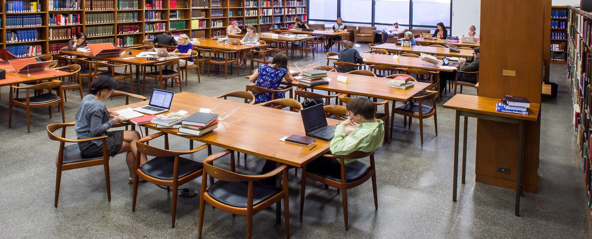

Certainly! Libraries are essential institutions that provide access to a wide range of resources, such as books, periodicals, digital materials, and more. Here are some key points about libraries:
| 1. Types of Libraries: There are different types of libraries, including public libraries, academic libraries (found in educational institutions), research libraries, and special libraries (focused on specific topics or industries). | 2. Services: Libraries offer various services, including lending books, e-books, and other materials; research assistance; computer access; educational programs; and more. | 3. Cataloging: Libraries use cataloging systems, like the Dewey Decimal System or Library of Congress Classification, to organize and locate materials. | 4. Digital Resources: In the digital age, libraries have expanded their offerings to include e-books, online databases, and digital archives. | 5. Community Centers: Public libraries often serve as community hubs, hosting events, workshops, and providing spaces for studying or meetings. |
| 6. Education and Literacy: Libraries play a vital role in promoting literacy and lifelong learning by offering educational resources and programs. | 7. Historical Preservation: Many libraries house rare and historical documents, making them important for preserving cultural heritage. | 8. Access to Information: Libraries aim to provide equal access to information for all, regardless of socio-economic background. | 9. Librarians: Trained librarians assist patrons in finding information, conducting research, and navigating library resources. | 10. Challenges: Libraries face challenges in adapting to digital technologies, funding issues, and evolving community needs. |